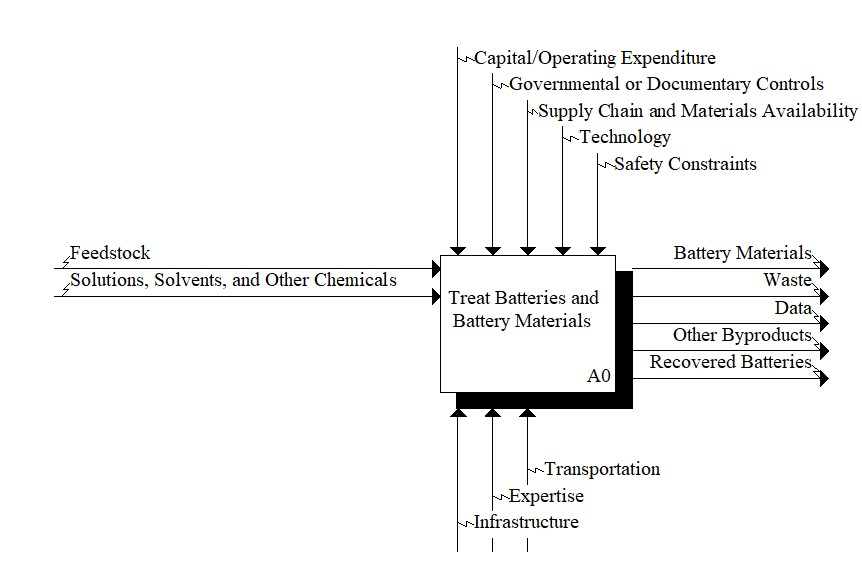

Model: Treat Traction Lithium Batteries at End-of-Life

Description
Notes:For information about IDEF0 model representation systems-level engineering, please see: Reslan M, Last N, Mathur N, Morris KC, Ferrero V (2022) Circular economy: a product life cycle perspective on engineering and manufacturing practices. Procedia CIRP, 105, 851-858.
https://doi.org/10.1016/j.procir.2022.02.141
Definitions:
End-of-life – the point at which a product or component is taken out of use. From ISO 8887-1:2017.
Standards:
SAE J2974_201902, Technical Information Report on Automotive Battery Recycling
SAE J1715/2_202108 - Battery Terminology
UL 3601, Measuring and Reporting Circularity of Li-ion and Other Secondary Batteries
UL 1974, Evaluation for Repurposing or Remanufacturing Batteries
ISO 8887-1:2017, Technical product documentation - Design for manufacturing, assembling, disassembling and end-of-life processing - Part 1: General concepts and requirements
References:
Bhar M, Ghosh S, Krishnamurthy S, Kaliprasad Y, Martha SK (2023) A review on spent lithium-ion battery recycling: from collection to black mass recovery. RSC Sustainability, 1(5), 1150-1167. https://doi.org/10.1039/D3SU00086A
Blömeke S, Scheller C, Cerdas F, Thies C, Hachenberger R, Gonter M, Herrmann C, Spengler TS (2022) Material and energy flow analysis for environmental and economic impact assessment of industrial recycling routes for lithium-ion traction batteries. Journal of Cleaner Production, 377, 134344. https://doi.org/10.1016/j.jclepro.2022.134344
Bruno M, Fiore S (2023) Material flow analysis of lithium-ion battery recycling in Europe: environmental and economic implications. Batteries, 9(4), 231. https://doi.org/10.3390/batteries9040231
Chen M, Ma X, Chen B, Arsenault R, Karlson P, Simon N, Wang Y (2019) Recycling end-of-life electric vehicle lithium-ion batteries. Joule, 3(11), 2622-2646. https://doi.org/10.1016/j.joule.2019.09.014
Gaines L (2014) The future of automotive lithium-ion battery recycling: Charting a sustainable course. Sustainable Materials and Technologies, 1, 2-7. https://doi.org/10.1016/j.susmat.2014.10.001
Kallitsis E, Korre A, Kelsall GH (2022) Life cycle assessment of recycling options for automotive Li-ion battery packs. Journal of cleaner production, 371, 133636. https://doi.org/10.1016/j.jclepro.2022.133636
Ma X, Meng Z, Bellonia MV, Spangenberger J, Harper G, Gratz E, Olivetti E, Arsenault R, Wang Y (2025) The evolution of lithium-ion battery recycling. Nature Reviews Clean Technology, 1(1), 75-94. https://doi.org/10.1038/s44359-024-00010-4
Melin HE (2019) State-of-the-art in reuse and recycling of lithium-ion batteries - A research review. Circular Energy Storage, 1, 1-57. A report commissioned by The Swedish Energy Agency
Activities
Concepts
Disclaimer: Certain commercial equipment, instruments, or materials are identified in this documentation to foster understanding. Such identification does not imply recommendation or endorsement by the National Institute of Standards and Technology, nor does it imply that the materials or equipment identified are necessarily the best available for the purpose.